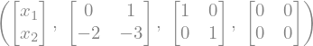
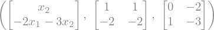
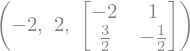
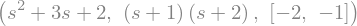
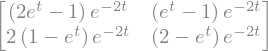
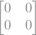

Linear Algebra Primer#
The state-space chapters that follow lean on a handful of linear-algebra ideas — matrix rank, eigenvalues, the matrix exponential — without stopping to explain them. This page collects exactly the pieces needed, worked out symbolically with SymPy, so State-Space Modeling can be read without a detour to a linear algebra textbook.
Nothing here is specific to control theory yet; the control-theoretic meaning of each idea (controllability, pole placement, …) is built on top of it in the next chapter.
import sympy as sp
sp.init_printing()
1. Matrices and Vectors in SymPy#
A state vector \(\mathbf{x}\) is just a column matrix; \(A\), \(B\), \(C\), \(D\) are
matrices built from symbols or numbers. SymPy represents all of these with
sp.Matrix.
x1, x2 = sp.symbols('x1 x2')
x = sp.Matrix([[x1], [x2]]) # state vector (2x1)
A = sp.Matrix([[0, 1], [-2, -3]]) # 2x2 numeric matrix
I2 = sp.eye(2) # identity
Z2 = sp.zeros(2, 2) # zero matrix
x, A, I2, Z2

Matrix multiplication, addition, and transpose work as expected:
A * x, A + I2, A.T

2. Matrix Inverse and Rank#
The inverse \(A^{-1}\) exists only when \(\det(A) \neq 0\) — i.e. when \(A\)’s columns (or rows) are linearly independent. The rank of a matrix is the number of linearly independent rows (equivalently, columns) it has.
Rank is the tool we will later use to test controllability and observability: a “full rank” matrix means every direction is reachable (or every state is distinguishable from the output); a rank-deficient one means some direction is invisible or unreachable.
A_full = sp.Matrix([[1, 2], [3, 4]])
A_full.det(), A_full.rank(), A_full.inv()

# A rank-deficient matrix: second row is a multiple of the first
A_deficient = sp.Matrix([[1, 2], [2, 4]])
A_deficient.det(), A_deficient.rank()
Because \(\det(A_{\text{deficient}}) = 0\), this matrix has no
inverse — calling .inv() on it raises an error. Geometrically, both rows
point along the same direction, so the matrix collapses the plane onto a
line instead of spanning it.
3. Eigenvalues and the Characteristic Polynomial#
An eigenvalue \(\lambda\) and eigenvector \(\mathbf{v} \neq 0\) of \(A\) satisfy
Equivalently, \(\lambda\) is a root of the characteristic polynomial
This is the same expression that appears throughout the earlier chapters of this book as \(\det(sI - A)\) in a transfer function’s denominator — the eigenvalues of \(A\) are exactly the poles of the system. Routh-Hurwitz, root-locus, and pole-placement are really all statements about where these eigenvalues sit in the complex plane.
A = sp.Matrix([[0, 1], [-2, -3]])
A.eigenvals()
s = sp.symbols('s')
charpoly = A.charpoly(s).as_expr()
charpoly, sp.factor(charpoly), sp.solve(charpoly, s)

As expected, the roots of the characteristic polynomial (\(-1, -2\)) match the eigenvalues computed directly above.
4. Similarity Transforms#
Two matrices \(A\) and \(A' = T^{-1}AT\) (for any invertible \(T\)) are called similar. Similar matrices represent the same linear map in different coordinates — and critically, similar matrices have identical eigenvalues.
This is why the canonical-form state-space model and the physical- coordinate state-space model of the same system (Sections 1 and 2 of State-Space Modeling) can look completely different yet describe identical dynamics: they’re related by a similarity transform, a change of basis for the state vector, not a change in the system itself.
T = sp.Matrix([[1, 1], [0, 1]]) # any invertible change of basis
A_prime = T.inv() * A * T
A.eigenvals(), sp.simplify(A_prime).eigenvals()
Same eigenvalues, different-looking matrix — exactly as claimed.
5. The Matrix Exponential#
For a scalar ODE \(\dot{x} = ax\), the solution is \(x(t) = e^{at}x(0)\). The matrix generalization is identical in form:
where \(e^{At}\) is defined by the same Taylor series as the scalar exponential, just with matrix powers:
SymPy computes this directly for numeric matrices.
t = sp.symbols('t', positive=True)
expA = (A * t).exp()
sp.simplify(expA)

Differentiating this result with respect to \(t\) and multiplying by \(A\) should reproduce it exactly — confirming \(\frac{d}{dt}e^{At} = Ae^{At}\), which is exactly why \(\mathbf{x}(t) = e^{At}\mathbf{x}(0)\) solves \(\dot{\mathbf{x}} = A\mathbf{x}\).
lhs = sp.diff(expA, t)
rhs = A * expA
sp.simplify(lhs - rhs)

6. The Cayley-Hamilton Theorem#
Every matrix satisfies its own characteristic polynomial. If
then
— substituting the matrix \(A\) itself into its own characteristic polynomial always gives the zero matrix. This looks like a strange thing to do (plugging a matrix into a polynomial that was built from that matrix), but it’s exactly the mechanism Ackermann’s formula uses later to compute state-feedback gains: evaluating a desired characteristic polynomial at \(A\) is the same operation, just with different coefficients.
n = A.shape[0]
charpoly_expr = A.charpoly(s).as_expr()
poly = sp.Poly(charpoly_expr, s)
coeffs = poly.all_coeffs() # highest degree first
phi_A = sp.zeros(n, n)
deg = len(coeffs) - 1
for i, c in enumerate(coeffs):
power = deg - i
phi_A += c * A**power
sp.simplify(phi_A)
As claimed, \(\phi(A)\) collapses to the zero matrix.
What’s next#
With rank, eigenvalues, similarity, the matrix exponential, and Cayley-Hamilton in hand, State-Space Modeling uses each of these directly: rank for controllability/observability, eigenvalues for pole locations, similarity to reconcile canonical and physical coordinate forms, the matrix exponential for the free response, and Cayley-Hamilton as the engine behind Ackermann’s formula for pole placement.